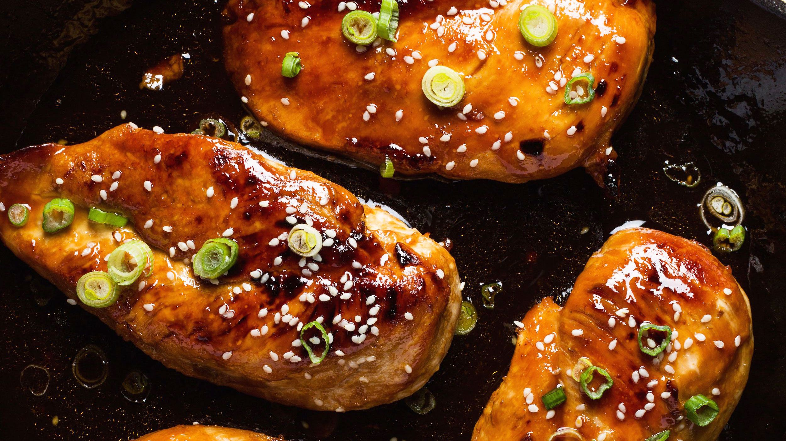

Honey-garlic chicken breast recipe
How to make honey-garlic chicken breast at home, step by step
Ingredients
- 500g / 1 lb chicken breast
- Salt and pepper
- 60g flour
- 3 1/2 tbsp (50g) unsalted butter
- 2 garlic cloves
- 1 1/2 tbsp apple cider vinegar
- 1 tbsp soy sauce
- 90g honey
Directions
- Cut the breasts in half horizontally to create 4 steaks in total. Sprinkle each side with salt and pepper.
- Place flour in a shallow dish. Coat chicken in flour and shake off excess.
- Melt most of the butter in a large skillet over high heat - hold back about 1 tsp for later.
- Place chicken in skillet and cook for 2-3 minutes until golden. Turn and cook the other side for 1 minute.
- Turn heat down slightly to medium high.
- Make a bit of room in the pan and add garlic and top with remaining dab of butter. Stir garlic briefly once butter melts.
- Add vinegar, soy sauce and honey. Stir / shake pan to combine. Bring sauce to simmer, then simmer for 1 minute or until slightly thickened.
- Turn chicken to coat in sauce. If the sauce gets too thick, add a touch of water and stir.
- Remove from stove immediately. Place chicken on plates and drizzle over remaining sauce.
